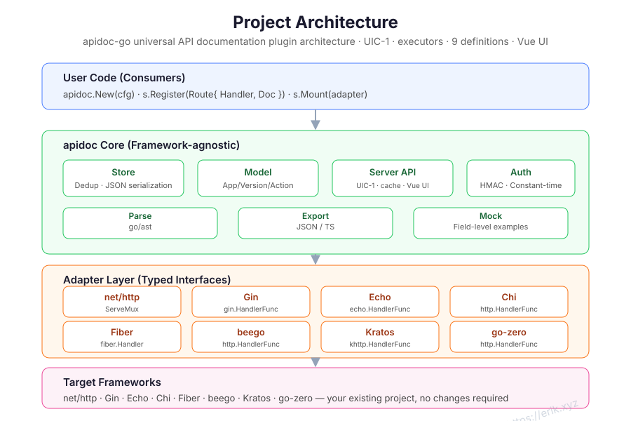
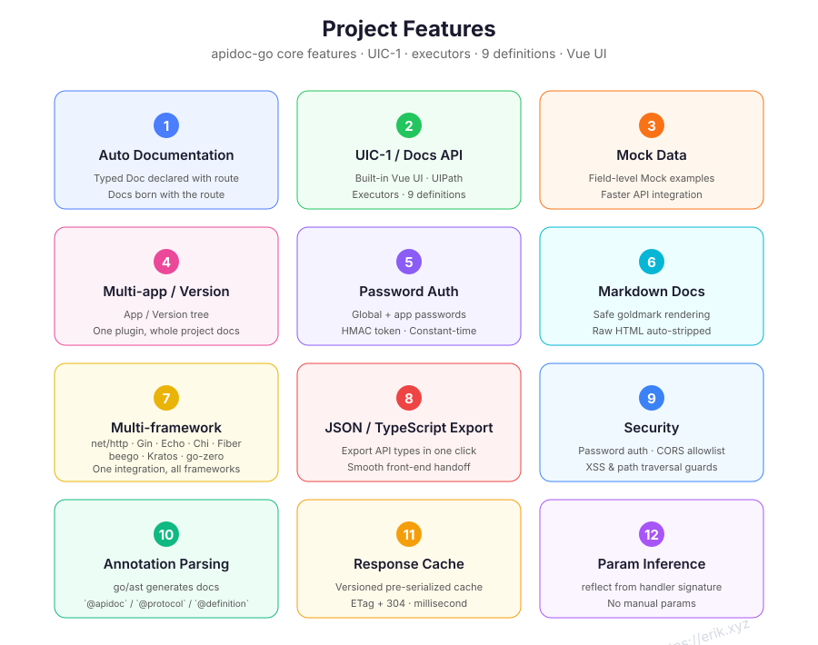
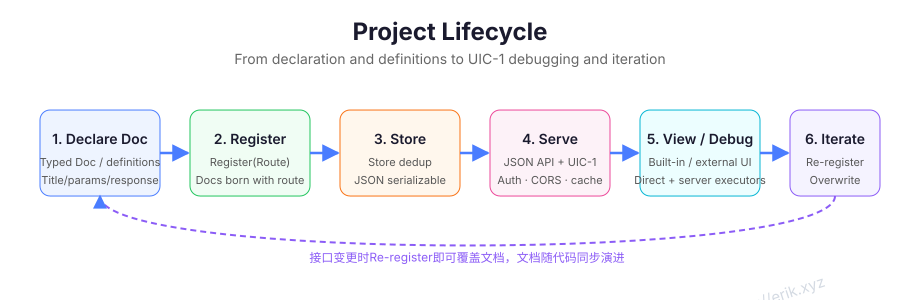

On this page
- When to use it
- Installation
- Minimal example (net/http)
- Protocol annotations
- Core model and registration rules
- Config
- Framework adapters
- Writing docs: Doc / Param / Response
- Param inference with reflect
- Comment parsing with go/ast
- Mock and live debugging
- UIC-1 unified endpoints
- Auth
- Apps and versions
- Exports
- Common scenarios
- REST CRUD
- Pagination
- Login and tokens
- File upload
- Multiple versions
- Comment-driven docs
- Rules and troubleshooting
- Visual overview
- Reference
The Go edition declares API docs as typed structs next to route registration. Docs and routes live together; the library exposes menus/protocols/detail/export APIs, and UIC-1 adds a built-in Vue UI, server-side debug executors and 9 definition formats. It fits Go HTTP services that want documentation to travel with the router.

When to use it
- Services built on net/http, Gin, Echo, Chi, Fiber, beego, Kratos or go-zero.
- Teams that want route registration and documentation in the same place.
- Projects that need a built-in Vue UI, protocol annotations, 9 definition formats, Mock, apps/versions, password auth, response caching and JSON/TypeScript exports.
- Go 1.24+ projects that can add doc registration to the existing route setup.
Installation
go get github.com/erikwang2013/apidoc-go
Minimal example (net/http)
package main
import (
"net/http"
"github.com/erikwang2013/apidoc-go"
"github.com/erikwang2013/apidoc-go/adapter"
)
func main() {
mux := http.NewServeMux()
s := apidoc.New(apidoc.Config{Title: "My API"})
if err := s.Register(apidoc.Route{
Method: "GET",
URL: "/hello",
Handler: http.HandlerFunc(func(w http.ResponseWriter, r *http.Request) {
w.Write([]byte("hello"))
}),
Doc: apidoc.Doc{
App: "demo",
Version: "v1",
Title: "Say hello",
Params: []apidoc.Param{
{Name: "name", In: "query", Type: "string", Required: true, Desc: "Your name"},
},
Responses: []apidoc.Response{
{Name: "message", Type: "string", Desc: "Greeting"},
},
},
}); err != nil {
panic(err)
}
if err := s.Mount(adapter.NewNetHTTP(mux)); err != nil {
panic(err)
}
http.ListenAndServe(":8080", mux)
}
The docs API lives under http://localhost:8080/apidoc/api/... and is consumed by apidoc-ui (or any client implementing the same contract). Mount only mounts the docs API; with Config.UIPath set, Go can also serve the shared dist/uic1-ui Vue build.
| Endpoint | Purpose |
|---|---|
GET /apidoc/api/menus |
App/version/controller/endpoint tree. |
GET /apidoc/api/protocols |
Protocol registry, aliases, URL schemes and default ports. |
GET /apidoc/api/detail |
Endpoint detail; protocol endpoints return protocol, protocol_info, method, url, params, responses and Mock. |
GET /apidoc/api/export |
Full project tree; ?format=typescript exports type definitions. |
Protocol annotations
Non-HTTP endpoints reuse @method + @url and select a protocol with @protocol (or infer it from the URL scheme):
// @apidoc
// @protocol mqtt
// @method PUBLISH
// @url mqtt://broker:1883/sensors/temp
// @title Publish temperature
// @param qos int false "QoS" in=option default=1
// @param payload json true "Payload" in=payload
func PublishTemp() {}
@protocol accepts HTTP/2, HTTP/3, SOAP, GraphQL, gRPC, Thrift, Dubbo, Hessian, WebSocket, SSE, MQTT, STOMP, Kafka, AMQP, XMPP, CoAP, LwM2M, Modbus TCP, DNP3, IEC 104, BACnet, OPC UA, ISO 8583, RTSP, SIP, RTP/RTCP, RTMP, TCP, UDP, Unix socket, raw and aliases; see GET /api/protocols for the full list. Declare binary bodies with @param ... type=binary (or hex/base64) + in=payload.
UIC-1 server executors are compiled behind build tags (for example apidoc_debug_all) and run through /ui/v1/debugSend|Start|Poll|Stop; protocols that were not compiled are absent from capabilities. Browser-direct HTTP/WebSocket/SSE does not go through an executor.
Core model and registration rules
| Type | Purpose |
|---|---|
apidoc.Server |
The docs server created by apidoc.New(Config). |
apidoc.Route |
One route: Method, URL, the framework-native Handler, and Doc. |
apidoc.Doc |
App, version, controller, title, description, params, responses, Markdown and sort. |
apidoc.Param |
Input field: Name, In, Type, Desc, Required, Default, Mock, Children. |
apidoc.Response |
Response shape: Name, Type, Desc, Mock, Fields. |
Registration rules:
Registerstores the doc and forwards the handler to the mounted adapter. Registrations made beforeMountare queued and replayed.- Registering the same
(app, version, method, url)again replaces the doc; the later registration wins. - The same
method + urlis not registered twice with the framework, which avoids route conflicts. MethodandURLare required. Path parameter syntax follows the host framework, such as Gin's:idor*path.- Check the error from
Register; adapter failures surface fromRegisterorMount.
Config
s := apidoc.New(apidoc.Config{
Prefix: "/apidoc",
Title: "My API",
Desc: "Internal API documentation",
GlobalParams: []apidoc.Param{
{Name: "Authorization", In: "header", Type: "string", Required: true, Desc: "Token"},
},
Auth: apidoc.AuthConfig{
Enable: true,
Password: "your-password",
Secret: "your-secret",
Expire: 24 * time.Hour,
Secure: true,
},
Apps: []apidoc.AppConfig{
{Key: "api", Title: "Public API"},
{Key: "admin", Title: "Admin API", Password: "admin-password"},
},
DebugOrigins: []string{"https://admin.example.com"},
})
| Field | Default | Description |
|---|---|---|
Prefix |
/apidoc |
Docs mount path. |
Title |
API Docs |
Documentation title. |
Desc |
empty | Documentation description. |
GlobalParams |
empty | Merged into every endpoint; overridden by (Name, In). |
Auth |
disabled | Enable, Password, Secret, Expire, Secure. |
Apps |
empty | App config: Key, Title, Password. |
DebugOrigins |
empty | CORS allowlist for live debugging; no origin is allowed by default. |
Framework adapters
| Framework | Constructor |
|---|---|
| net/http | adapter.NewNetHTTP(mux) |
| Gin | adapter.NewGin(engine) |
| Echo | adapter.NewEcho(e) |
| Chi | adapter.NewChi(mux) |
| Fiber | adapter.NewFiber(app) |
| beego | adapter.NewBeego(app) |
| Kratos | adapter.NewKratos(srv) |
| go-zero | adapter.NewGoZero(srv) |
Gin example:
r := gin.Default()
s := apidoc.New(apidoc.Config{Title: "My API"})
s.Register(apidoc.Route{
Method: "GET",
URL: "/users/:id",
Handler: getUser,
Doc: apidoc.Doc{
Title: "Get user",
Params: []apidoc.Param{
{Name: "id", In: "path", Type: "int", Required: true, Desc: "User ID"},
},
Responses: []apidoc.Response{
{Name: "name", Type: "string", Desc: "User name"},
},
},
})
s.Mount(adapter.NewGin(r))
r.Run(":8080")
Swap the adapter constructor for Echo, Chi or Fiber and keep the registration code. beego keeps one handler per path, so multiple methods on the same URL need to follow the framework's capabilities. Kratos and go-zero take their own server types.
Writing docs: Doc / Param / Response
s.Register(apidoc.Route{
Method: "POST",
URL: "/users",
Handler: createUser,
Doc: apidoc.Doc{
App: "api",
Version: "v1",
Controller: "User",
Title: "Create user",
Desc: "Create a user and return the profile",
Author: "erik",
Sort: 10,
Markdown: "Requires an admin token.",
Params: []apidoc.Param{
{Name: "name", In: "body", Type: "string", Required: true, Desc: "User name"},
{Name: "email", In: "body", Type: "string", Required: true, Desc: "Email"},
{Name: "roles", In: "body", Type: "array", Children: []apidoc.Param{
{Name: "id", Type: "int", Required: true},
}},
},
Responses: []apidoc.Response{
{Name: "id", Type: "int", Desc: "User ID"},
{Name: "name", Type: "string", Desc: "User name"},
},
},
})
Param.In accepts header, query, body or path. Use Children for object/array fields and Response.Fields for nested response fields. Markdown is rendered on the detail page.
Param inference with reflect
When Doc.Params is empty, Register infers params from the handler signature. Struct arguments expand into body fields using json tags, and framework contexts such as *gin.Context, echo.Context or *fiber.Ctx are skipped:
type CreateUserReq struct {
Name string `json:"name"`
Email string `json:"email"`
}
func CreateUser(c *gin.Context, req CreateUserReq) { /* ... */ }
Inference provides fields and types, not descriptions. Explicit Doc.Params is still recommended for important endpoints.
Comment parsing with go/ast
Write @apidoc comments above a handler and parse the directory with parse.ParseDir:
// @apidoc
// @method POST
// @url /api/v1/users
// @title Create user
// @param name string true "User name"
// @success ok User "Success"
func CreateUser(c *gin.Context, req *CreateUserReq) { /* ... */ }
results, err := parse.ParseDir("./handlers")
if err != nil {
log.Fatal(err)
}
for _, r := range results {
s.Register(apidoc.Route{Method: r.Method, URL: r.URL, Handler: CreateUser, Doc: r.Doc})
}
Supported tags include @method, @url, @title, @desc, @author, @app, @version, @group, @sort, @param, @header, @body, @success / @response, @markdown and @protocol. @param takes name type required desc key=value...; in accepts header, query, body or path.
Mock and live debugging
- The detail page generates Mock examples automatically;
Param.MockandResponse.Mockcan override values. - Without a Mock value, the mock package generates values by type:
string,int,float,bool,objectand so on. - apidoc-ui calls the target service directly from the browser. Cross-origin origins must be listed in
DebugOrigins; the adapter sends the CORS headers. - apidoc-ui connects browser protocols directly. Protocols that need server execution use UIC-1 executors, gated by Go build tags, and capabilities advertises only the compiled protocols.
/api/menus,/api/protocolsand/api/exportare pre-serialized and cached per document version;Register/SetAppMetainvalidates them. Responses carryETagandCache-Control: private, max-age=300, so repeat requests can return 304.
UIC-1 unified endpoints
The /ui/v1 contract is fully implemented in Go, so apidoc-ui can discover Go and gate entries from capabilities:
- Read endpoints:
capabilities,config,menus,detail,docMenus,docDetail,verifyAuth. - Debug: browser-direct HTTP, WebSocket and SSE; server executors cover HTTP, HTTP/2, HTTP/3, SOAP, GraphQL, JSON-RPC, XML-RPC, OData, MCP, A2A, Webhook, TCP/UDP/Unix/raw, MQTT, STOMP, AMQP, Kafka, XMPP, CoAP, LwM2M, Modbus, DNP3, IEC 104, BACnet, OPC UA, RTSP, SIP, RTP/RTCP, RTMP, gRPC, Thrift, Dubbo, Hessian and ISO 8583 through
/ui/v1/debugSend|Start|Poll|Stop, compiled selectively by build tag. - Management: share record CRUD/login, cache clear/warm, declarative generators and code templates,
exportAllData. - Definitions:
@definitionannotations andDefinitionRootconfig support 9 formats: proto, WSDL/XSD, GraphQL, OpenAPI, AsyncAPI, JSON Schema, JSON-RPC, XML-RPC and OData EDMX. - Bearer auth with app/share scope checks; unsupported features are explicitly disabled through capabilities.
Config.UIPathcan serve the shareddist/uic1-uibuild; the same artifact also serves PHP and Rust.- The existing
GET /api/menus|protocols|detail|exportroutes remain compatible; UIC-1 is an additive layer, not a replacement.
Released capabilities follow the repository main and Releases. Go is now a complete protocol execution backend, with executors compiled selectively by build tag.
Auth
When Config.Auth is enabled:
- The UI shows a login panel.
POST /apidoc/api/loginchecks the global password and sets an HttpOnly cookie. - If an app has its own
Password,POST /apidoc/api/app-loginissues an app-scoped token. The app password takes precedence. Secretsigns the token. Do not use the default in production and keep it consistent across instances.Secure: trueadds the Secure flag to the cookie on HTTPS.DebugOriginsonly allows the listed origins; do not open it to everyone.
Apps and versions
Doc.App / Doc.Version place an endpoint in the tree. Config.Apps supplies app titles and passwords. The UI switches apps and versions in the same portal. The version is metadata; actual routing is still controlled by the registered handler.
Exports
| Format | Endpoint | Notes |
|---|---|---|
| JSON | GET /apidoc/api/export |
Full project tree. |
| TypeScript | GET /apidoc/api/export?format=typescript |
Type definitions. |
| Unknown format | any other format |
Returns 400. |
Exports are protected by the same auth as the doc API. Front-end teams can download TypeScript or feed the JSON into test tooling.
Common scenarios
REST CRUD
Register a Route for list, detail, create, update and delete. Group them with Doc.Controller and use Param.In for path, query and body fields. Later registrations replace duplicate (app, version, method, url) entries, which is useful during initialization.
Pagination
Put shared page / pageSize fields in GlobalParams, or let reflect expand a request struct. Use explicit Doc.Params when descriptions and defaults matter.
Login and tokens
Add Authorization to GlobalParams so every endpoint carries it. The debug panel can fill global headers. Protect the documentation itself with the global or app password in production.
File upload
Use Type: "file" (or the framework's upload field) and handle multipart in the handler. The debug panel supports file selection.
Multiple versions
Use Doc.Version for version metadata and Config.Apps for the app tree. There is no need to copy the doc server per version.
Comment-driven docs
For large existing handler sets, parse comments with parse.ParseDir and turn each parse.Result into a Route. This avoids duplicating field declarations in the router.
Rules and troubleshooting
| Problem | Check |
|---|---|
/apidoc/api/menus returns 404 |
Did you call Mount? Does Prefix match the URL? Is the front-end pointing at the docs API instead of the removed built-in UI? |
| Route registration fails | Are Method / URL empty? Does the adapter support the route syntax? Is the framework running? |
| Endpoint is missing | Did Register return an error? Do Doc.App / Version match Config.Apps? |
| Inferred params are wrong | Does the handler struct use json tags? Is a framework context in the argument list? |
| Comment parsing finds nothing | Is the @apidoc marker present? Is the file under ParseDir? Is the tag syntax valid? |
| Debug CORS fails | Is the page origin in DebugOrigins? Is the adapter CORS mounted? |
| Auth fails | Is the cookie accepted? Are password, Secret and expiry correct? |
| Page is stale | Doc APIs use ETag caching; force a refresh or wait for the cache to expire. |
Visual overview


Reference
- apidoc-go README
- apidoc-go Releases
- Architecture and lifecycle diagrams are shown above and in the README
docs/svg/directory.
Install
go get github.com/erikwang2013/apidoc-goOther language guides
Need help?
Open a GitHub Issue, or read the repository README first.